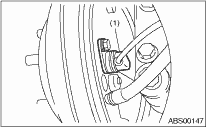

1. Disconnect the ground cable from battery.
2. Lift up the vehicle.
3. Remove the rear seat and disconnect the rear ABS wheel speed sensor connector.
4. Remove the ABS wheel speed sensor harness bracket from the rear trailing link and rear trailing link bracket.
5. Remove the rear ABS wheel speed sensor from the back plate.
CAUTION:
• Be careful not to damage the pole piece and the face of the teeth located at the end of the ABS wheel speed sensor during removal.
• Do not pull on the ABS wheel speed sensor harness during removal.

|
(1) |
Rear ABS wheel speed sensor |
6. Remove the rear tone wheel when removing the hub from the housing and hub assembly.